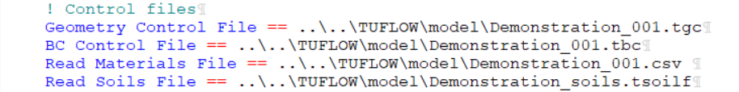
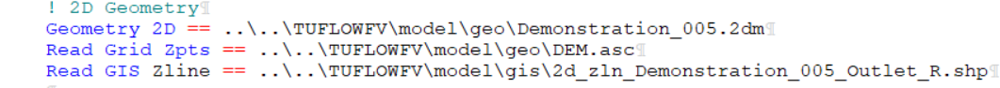

Appendix D Demonstration Model
D.1 Context
A demonstration model and small suite of simulations have been developed to support TUFLOW CATCH users. These simulations:
- Can be used as templates for construction of other TUFLOW CATCH simulations
- Encompass the supported TUFLOW CATCH configurations, and
- Are able to be run without a licence for TUFLOW CATCH, TUFLOW HPC or TUFLOW FV
Descriptions of the model and demonstration simulations follow.
D.2 Domain
The demonstration model is located in New Zealand. It uses publicly available base data sets where available (with some of these being modified on occasion), and synthetic data otherwise.
The catchment has:
- An area of approximately 55km\(^2\)
- A relief of approximately 20m
- Three (synthetic) land uses
- Urban
- Forest
- Agriculture
The general arrangement of the catchment is presented in Figure D.1.

Figure D.1: TUFLOW CATCH demonstration model: catchment
The receiving waterway (which is a hypothetical lake) has:
- An area of approximately 1km\(^2\)
- A maximum depth of approximately 12m
- Two major riverine tributaries
- Two local wastewater treatment plant discharges
- One offtake
- An overflow outlet weir
The general arrangement of the receiving waterway is presented in Figure D.2.

Figure D.2: TUFLOW CATCH demonstration model: receiving waterway
The domain is simulated under TUFLOW CATCH for a period of 1 week from 01/01/2021 to 07/01/2021, inclusive.
D.3 Numerical models
The TUFLOW HPC, pollutant export and TUFLOW FV models are described following.
D.3.1 TUFLOW HPC
The TUFLOW HPC model has the following general configuration:
- A 2D cell size of 50m, SGS turned on with a sample target distance of 1m
- A synthetic rainfall record applied, with a maximum daily rainfall of approximately 60mm
- Three materials, with one for each land use above
- One soil layer with constant thickness of 0.6m
All simulations use GPU.
D.3.2 Pollutant export
The pollutant export model has various forms depending on the TUFLOW CATCH configuration is simulated. Across these various forms, both shear1 and washoff1 methods are deployed, and other pollutant export parameters are set using the guidance provided in this manual. In all cases where applicable:
- Salinity, dissolved oxygen, silicate, adsorbed phosphorus and phytoplankton are set to constant concentrations
- Sediment and particulate organics are prohibited from infiltrating to groundwater
- Water temperature is provided as a timeseries
- Sediment uses the shear1 method, and all other pollutants use the washoff1 method
D.3.3 TUFLOW FV
The TUFLOW FV model has the following general configuration:
- Simulation of hydrodynamics, including density (salinity and temperature) driven processes
- Full atmospheric heat exchange simulation
- Sediment transport simulation, with one fraction
- Water quality simulation, using the Organics simulation class
- 3D simulation with 8 z layers and 6 sigma layers
- Three bed materials to define sediment transport and water quality processes
All simulations use GPU.
D.4 Simulation suite
The demonstration model suite includes the following simulations.
| Simulation name | Description | Use case | TUFLOW CATCH Configuration |
|---|---|---|---|
| Demonstration_001.tcc | Catchment hydraulic calibration: HPC 2d outlet | Calibration of catchment hydraulic model without receiving model | TUFLOW HPC calibration only |
| Demonstration_002.tcc | Catchment hydraulic calibration: Pollutant export configuration with constant salinity and temperature timeseries | Calibration of catchment hydraulic model with downstream polygon | Pollutant export |
| Demonstration_003.tcc | Catchment pollutant calibration: Pollutant export configuration with user pollutant/s | Only catchment hydraulic and pollutant export models are to be used, with non-TUFLOW FV pollutants and downstream polygon | Pollutant export |
| Demonstration_004.tcc | Catchment pollutant calibration: Pollutant export configuration with TUFLOW FV pollutants | Calibration of catchment pollutant export model following 002 calibration, to TUFLOW FV pollutants with downstream polygon | Pollutant export |
| Demonstration_005.tcc | Linked catchment and receiving model: Integrated configuration with all TUFLOW FV pollutants | Generation of first pass spatially resolved TUFLOW FV HD and pollutant boundaries for subsequent TUFLOW FV calibration initiation | Integrated |
| Demonstration_006.tcc | Receiving model calibration: TUFLOW FV simulation with preserved inflows | Catchment hydraulic and pollutant modelling complete (or largely so) and TUFLOW FV is to be calibrated without reunning catchment model | Integrated |
| Demonstration_007.tcc | Linked catchment and receiving model: Hydrology configuration with salinity and temperature | No pollutant simulation required in TUFLOW - extend 002 above to include TUFLOW FV model | Hydrology |
D.5 Downloads
D.5.1 Binaries
The required binary executable files are to be downloaded from the following locations (to be updated with hyperlinks: in the interim, email support@tuflow.com for relevant binaries):
- TUFLOW CATCH
- TUFLOW HPC
- TUFLOW FV
It is suggested that these are saved in a convenient and centralised location. For the purposes of explanation in this Appendix, it has been assumed that they are saved to the following locations (with ReleaseXX being a placeholder for the release version of each, which will be different):
- C:\TUFLOW\EXE\TUFLOWCATCH\ReleaseXX\TUFLOWCATCH.exe
- C:\TUFLOW\EXE\TUFLOW\ReleaseXX\TUFLOW_iSP_w64.exe
- C:\TUFLOW\EXE\TUFLOWFV\ReleaseXX\TUFLOWFV.exe
D.5.2 Simulation files
The demonstration model suite can be downloaded here, in the TUFLOW CATCH section. For the purposes of explanation in this Appendix, it has been assumed that the suite is saved to the following location and then unzipped:
- C:\TUFLOW\Demonstration\TUFLOWCATCH\
When unzipped, the high level folder structure will be as follows:
- Modelling
- TUFLOW
- TUFLOWCATCH
- TUFLOWFV
The key directory for executing TUFLOW CATCH is then C:\TUFLOW\Demonstration\TUFLOWCATCH\Modelling\TUFLOWCATCH\runs
Once downloaded and unzipped, the user is required to:
In the Modelling\TUFLOWCATCH\runs\run_simulation.bat file:
- On line 2, copy and paste in the exact path to the TUFLOW CATCH executable over the placeholder <TUFLOW CATCH EXECUTABLE FULL PATH>, so that:
set exe=<TUFLOW CATCH EXECUTABLE FULL PATH>becomes (using the example path above):
set exe=C:\TUFLOW\EXE\TUFLOWCATCH\ReleaseXX\TUFLOWCATCH.exe- Uncomment the desired simulation command by deleting the preceding ‘::’ , so that (if simulation 001 was to be run):
:: %exe% Demonstration_001.tccbecomes:
%exe% Demonstration_001.tccIn the Modelling\TUFLOWCATCH\runs\Demonstration_001.tcc file (and any other Demonstration_00*.tcc file to be executed):
- In the Catchment Hydraulic Model block, copy and paste in the exact path to the TUFLOW CATCH executable over the placeholder <TUFLOW EXECUTABLE FULL PATH>, so that:
EXE == <TUFLOW EXECUTABLE FULL PATH>becomes (using the example path above):
EXE == C:\\TUFLOW\\EXE\\TUFLOW\\ReleaseXX\\TUFLOW_iSP_w64.exe- In the Receiving Model block, copy and paste in the exact path to the TUFLOW FV executable over the placeholder <TUFLOW FV EXECUTABLE FULL PATH>, so that:
EXE == <TUFLOW FV EXECUTABLE FULL PATH>becomes (using the example path above):
EXE == C:\\TUFLOW\\EXE\\TUFLOWFV\\ReleaseXX\\TUFLOWFV.exe
D.6 Execution
Once the binaries and simulation files have been downloaded and paths altered as above (and altered files saved), a TUFLOW CATCH simulation can be executed as follows:
- Open a command prompt and navigate to the TUFLOW CATCH runs folder
cd C:\TUFLOW\Demonstration\TUFLOWCATCH\Modelling\TUFLOWCATCH\runs
C:\- Ensure the path to the TUFLOW CATCH executable has been set in run_simulations.bat, and that at least one simulation has been uncommented
- Type the following in the command prompt and hit enter, and TUFLOW CATCH will execute:
run_simulationsD.7 Results interrogation
Once executed, results will be written to:
- C:\TUFLOW\Demonstration\TUFLOWCATCH\Modelling\TUFLOWCATCH\results
Use the QGIS TUFLOW CATCH plugin (see Section 4.3) to generate a .json file and view the results. Simulations that involve only TUFLOW HPC or TUFLOW FV can have their results interrogated in the normal manner through the TUFLOW Viewer.
D.7.1 Example json file creation
Simulations 005 and 006 can be used (after execution) to create a json file within the TUFLOW CATCH plugin (see Section 4.3). To do so, select the following results files in the json creation process:
- Demonstration_006_receiving_HD.nc
- Demonstration_006_receiving_WQ.nc
- Demonstration_005_catchment_hydraulic.xmdf
Save the json to here:
- C:\TUFLOW\Demonstration\TUFLOWCATCH\Modelling\TUFLOWCATCH\results\Demonstration_006.tuflow.json
Once created, drag and drop the json onto a QGIS window to view the results. Hit F7 to toggle the layer styling panel and reveal the the full suite of simulated quantities. Select the ‘Conc SED_FINES’ field by clicking on the contour icon to the right of the field name as per Figure D.3.
Figure D.3: Selecting the Conc SED_FINES data field in a json results file
An animation of the associated surface concentraton results, that shows the connectivity between TUFLOW HPC, pollutant export and TUFLOW FV simultions of sediment is presented in Figure D.4. This animation was prepared using the TUFLOW CATCH plugin, and the maximum concentration was set to 5 mg/L.

Figure D.4: Conc SED_FINES animated results
The connectivity between models is clear. Of note is the increase in concentrations once flows enter the receiving model arms. This is due to resuspension of previously accumulated bed sediment in the lake, which has been computed using the advanced TUFLOW FV Sediment Transport Module capability. Users could investigate this further by reducing erosion rates, or setting initial bed masses in the TUFLOW FV ST model to zero - this concentration spike will then not appear.
D.7.2 Example results
An example of a dry mass accumulation predicted by TUFLOW HPC (under the washoff1 model) at a point in time just prior to rainfall is presented in Figure D.5, for FRP. The different accumulations of FRP in different land use areas are clear. The red areas are urban areas, which had the highest accumulation rates of FRP set within the simulation.

Figure D.5: TUFLOW CATCH demonstration model: FRP dry mass accumulation
An example of a net mass distribution predicted by TUFLOW HPC (under the shear1 model) at simulation end is presented in Figure D.6, for SED_FINES. Positive (negative) results reflect net accumulation (erosion) at simulation end. Erosion (and deposition) limits were set to 1 kg/ha in the simulation.

Figure D.6: TUFLOW CATCH demonstration model: SED_FINES net mass at simulation end
D.8 Application under version control
D.8.1 Context
It is understood that the a common use case of TUFLOW CATCH involves multiple modellers with seperate but complementary skill sets working on the same TUFLOW CATCH project. For example, a TUFLOW CATCH project might involve a TUFLOW HPC specialist undertaking catchment simulation and a TUFLOW FV specialist addressing receiving waterway simulation. These modellers will need to work quasi-independently for parts of the project, but bring their work together efficiently at a point. TUFLOW CATCH has been designed to allow for these modellers to work in parallel as the project unfolds, and most importantly, to both work from the same TUFLOW CATCH control file: different users should not need to set up and work from different TUFLOW CATCH control files of the same model. It also goes without saying that TUFLOW HPC and TUFLOW FV modellers should never set up individual *.tcc and *.fvc control files and attempt to construct their models disjointedly in the hope of manually combining models together under TUFLOW CATCH at some future point: both should undertake all set up works from a single TUFLOW CATCH *.tcc control file. Given this, the question arises as to how this is to be managed from a file control perspective. This is discussed in the following sections.
D.8.2 Use case
The use case considered here as an example of using version control is the integrated TUFLOW CATCH configuration, with one modeller working on the TUFLOW HPC calibration, and a different modeller working on the TUFLOW FV calibration. TUFLOW makes no recommendation as to which (of the many available) versioning platforms should or could be used. For the purposes of this example, Git is used, with no intent of endorsement.
D.8.3 Possible workflow #1
The following is a possible workflow for the two modellers delivering the use case described above, working largely independently until recombination of their work into an overall TUFLOW CATCH simulation. Alterations to this are expected to be required on a case by case basis, and one such example is presented subsequently as a second workflow.
The steps below assume an introductory level of knowledge of Git commands and processes, and are not intended to be exhaustive. Users should familiarise themselves with basic Git protocols and concepts before reviewing the below. For example, users should appropriate configure their .gitignore file, and be familiar with commnads such as git log and git status to keep track of their work.
Preliminaries
- Install Git. See https://git-scm.com/book/en/v2/Getting-Started-Installing-Git
- Ensure at least one user already has the relevant account and sufficient permissions to create a new Git project in a web interface
Project initiation
- Use the TUFLOW CATCH QGIS plugin (see Section 4.3) to generate the folder structure and template files for a TUFLOW CATCH simulation. This can be created in any location because it wil be subsequently moved
- Create a new Git project via the web interface of either GitHub or GitLab - TUFLOW makes no recommendation in this regard. This is often via clicking a blue button and filling out some high level project details. The project will have one branch, assumed to be called ‘main’ for the purposes of this example

Figure D.7: Creating a new Git project
- Once created, and also from the web interface, copy the address that allows cloning of the new project via https. This is often achieved through a drop down menu on a button marked ‘Clone’, such as the below (the blue highlighted text is to be copied)

Figure D.8: Copying the https address of a newly created Git project
- Open a new DOS command prompt and navigate to a location where modelling is to be undertaken, preferably under a folder called ‘Modelling’
- Clone the new Git project to the Modelling folder, by typing the following, pasting the https address copied abve in the <placeholder> location
git clone <placeholder>An example might look like the following. A new folder under Modelling will be created named the same as the Git project name (in this case, ‘catch-demo’). It is this lower folder that is the git project:
git clone https://bmt-gitlab.bmt-wbm.local/user.last/catch-demo.git- Change directory into the cloned folder (using the name of the project, in this case ‘catch-demo’)
cd catch-demo- Copy the TUFLOW CATCH folder structure created above into this project directory (‘Modelling\catch-demo’ in this example), either through windows explorer or the DOS prompt
- In the DOS command prompt whilst in the catch-demo directory, add the new files to a Git commit by typing:
git add . git commit -m "First commit"- Push the new commit back up to the Git web interface
git pushThe project created earlier is now populated with vanilla TUFLOW CATCH template files, both locally and in the web repository.
Update files
- Modify template files locally to set up overall TUFLOW CATCH simulation with common commands (e.g. project etc) and save files
- Commit changes and push
git add . git commit -m "Populates initial TUFLOW CATCH files for branching" git pushCreate branches
- In the web interface, which now has the “Populates initial TUFLOW CATCH files for branching” commit present, create a new branch from main for the TUFLOW HPC modeller. This is often via clicking a blue button. Call the branch ‘HPC’ when prompted for a name. Create this new branch from main

Figure D.9: Create a branch in a Git project
- In the web interface, create another new branch from main for the TUFLOW FV modeller in the same way. Call the branch ‘FV’ when prompted for a name. Create this new branch from main
- In the web interface, which now has the “Populates initial TUFLOW CATCH files for branching” commit present, create a new branch from main for the TUFLOW HPC modeller. This is often via clicking a blue button. Call the branch ‘HPC’ when prompted for a name. Create this new branch from main
The Git project now has the branches it needs: ‘main’ for the final TUFLOW CATCH model; ‘HPC’ for the TUFLOW HPC modeller; and ‘FV’ for the TUFLOW FV modeller. This allows for the individual modellers to develop their models independently, but from the same starting point. The intention is that thie files will be merged back into main on completion to form the TUFLOW CATCH simulation suite.
The TUFLOW HPC and TUFLOW FV modellers can now work on different branches, in parallel, with a view to merging their work back into the main branch on completion.
- The TUFLOW HPC modeller now:
- Opens a DOS command prompt and navigates to the directory to be used for modelling. This can be anywhere and does not need to be related to the TUFLOW FV modeller’s work
- Following the steps above, clones the project
git clone https://bmt-gitlab.bmt-wbm.local/user.last/catch-demo.git cd catch-demo- Once in the catch-demo (or project) directory it is essential that the TUFLOW HPC modeller not work in the ‘main’ branch, but work in the ‘HPC’ branch. This requires the TUFLOW HPC modeller to check out the HPC branch by typing:
git checkout HPC- The TUFLOW HPC modeller should then begin construction of the TUFLOW HPC model through the TUFLOW CATCH *.tcc control file in this HPC branch, noting:
- Set up and execution of the TUFLOW HPC model should only occur through the *.tcc file. The modeller should never create a *.tcf file
- References to boundary database files etc, should point into the TUFLOW directory structure from the *.tcc, for example

Figure D.10: Example of referencing TUFLOW files from a *.tcc TUFLOW CATCH control file
- The TUFLOW CATCH simulation should use the TUFLOW HPC calibration only or Pollutant export configuration with a downstream polygon as a placeholder for the TUFLOW FV mesh. This does not involve making any changes to the Receiving Model block of the *.tcc (which will be modified by the TUFLOW FV modeller)
- At key stages of construction, the TUFLOW HPC modeller should stage, commit and push changes to the web project
git add . git commit -m "A useful commit message" git push- When construction is finished, the TUFLOW HPC modeller is ready to merge into the main branch to populate the overall TUFLOW CATCH simulation
- The TUFLOW FV modeller now:
- Opens a DOS command prompt and navigates to the directory to be used for modelling. This can be anywhere and does not need to be related to the TUFLOW HPC modeller’s work
- Following the steps above, clones the project
git clone https://bmt-gitlab.bmt-wbm.local/user.last/catch-demo.git cd catch-demo- Once in the catch-demo (or project) directory it is essential that the TUFLOW FV modeller not work in the ‘main’ branch, but work in the ‘FV’ branch. This requires the TUFLOW FV modeller to check out the FV branch by typing:
git checkout FV- The TUFLOW FV modeller should then begin construction of the TUFLOW FV model through the TUFLOW CATCH *.tcc control file in this FV branch, noting:
- Set up and execution of the TUFLOW FV model should only occur through the *.tcc file. The modeller should never create a *.fvc file
- References to boundary, geometry and files etc, should point into the TUFLOWFV directory structure from the *.tcc, for example

Figure D.11: Example of referencing TUFLOW FV files from a *.tcc TUFLOW CATCH control file
- The TUFLOW CATCH simulation should use the TUFLOW FV calibration only configuration. This does not involve making any changes to the Catchment Hydraulic Model block of the *.tcc (which will be modified by the TUFLOW HPC modeller)
- At key stages of construction, the TUFLOW HPC modeller should stage, commit and push changes to the web project
git add . git commit -m "A useful commit message" git push- When construction is finished, the TUFLOW FV modeller is ready to merge into the main branch to populate the overall TUFLOW CATCH simulation
- The TUFLOW HPC modeller now:
The HPC and FV branches can be merged into the main branch to generate the overall TUFLOW CATCH simulation
- Because the modellers have been working in separate blocks of the *.tcc, and separate folder structures for base data (..\TUFLOW and ..\TUFLOWFV), conflicts should be minimal
- Free packages such as Winmerge can be used to asist with this process. This is a suggestion only and not an endorsement of Winmerge by TUFLOW
D.8.4 Possible workflow #2
The following is a possible addition to the above workflow for the two modellers delivering the same use case. Instead of the modellers working entirely independently until merging, it includes occassional provision of interim catchment inflows from the TUFLOW HPC modeller to the TUFLOW FV modeller to assist in calibration of the latter under wet conditions. This is accomplished by:
- Merging sufficiently complete HPC and FV branches into the main branch to produce a TUFLOW CATCH integrated configuration simulation from time to time, instead of only at the end of individual calibration tasks
- Executing TUFLOW CATCH in integrated configuration to produce all spatially and temporally resolved boundary inflows for TUFLOW FV
- Add, commit and push the boundary files to the main branch
- Copy the boundary files (including header blocks (.fvcatchbc) and data files (.csv)) to the \TUFLOWCATCH\bc_dbase\ folder in the FV branch being used by the TUFLOW FV modeller for subsequent access
- Rename the *.fvcatchbc file to be the same as the TUFLOW FV modellers *.tcc file name so that it is automatically found by the *.tcc simulation
- Rerun the TUFLOW FV modeller’s *.tcc simulaion, adding the command below inside the Receiving Model block so that blank catchment boundary files (the default) are not produced and so do not overwrite those developed in the above integrated TUFLOW CATCH simulation
Preserve catchment inflows == ON- The TUFLOW FV modeller can then continue the calibration process with revised inflows. The above process can be repeated at intervals that suit the modelling project and timelines.